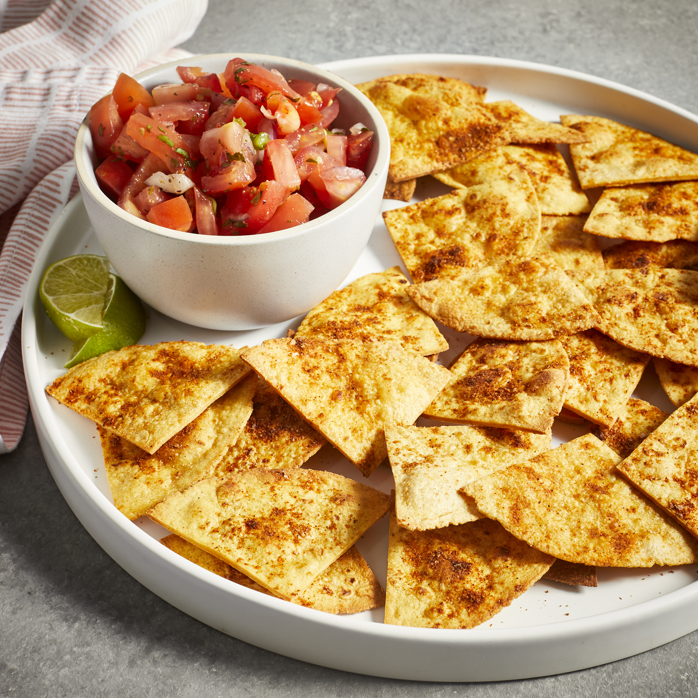

Baked Tortilla Chips

Who knew making your own tortilla chips could be so easy? This baked tortilla chips recipe comes together in just 25 minutes, and with so many flavors, you'll never go back to store-bought again. Get your salsa and guac ready because you'll want to eat these crispy chips right out of the oven!
Ingredients
- 1 (12 ounce) package corn tortillas
- 3 tablespoons lime juice
- 1 tablespoon vegetable oil
- 1 teaspoon ground cumin
- 1 teaspoon chili powder
- 1 teaspoon salt
Steps
- Preheat oven to 350 degrees F (175 degrees C).
- Stack tortillas in layers of 5 or 6. Cut through each stack to make 8 wedges. Arrange wedges in a single layer on rimmed baking sheets.
- Combine lime juice and oil in a spray bottle or mister; shake until well mixed. Spray the tops of the tortilla wedges until slightly moist.
- Combine cumin, chili powder, and salt in a small bowl; sprinkle mixture over the chips.
- Bake in the preheated oven for 7 minutes.
- Remove from the oven. Flip chips, then mist and season again.
- Return to the oven, rotating the pans and switching racks. Bake, checking often to ensure they don't burn, until chips are lightly browned and crisp, 5 to 8 more minutes.
- Remove from the oven and cool slightly before serving. Chips will crisp up more as they cool.
Return to main page